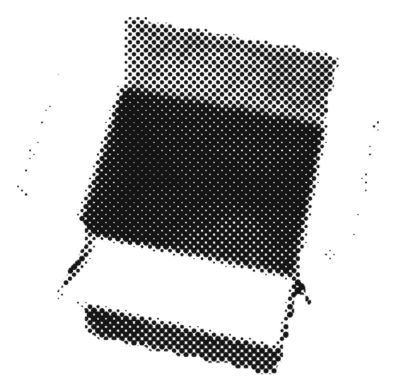
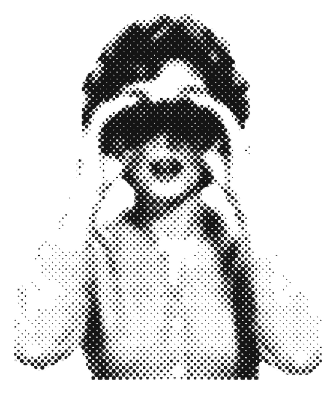
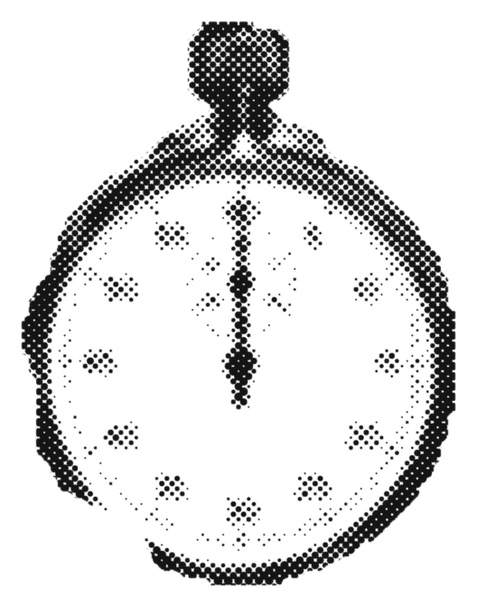

@blok.capital
5 questions to ask before
you invest in anything
(for dummies)
1. what do i actually own?
why: if you can't name what's inside, you can't judge the risk.
- ask for the full holdings list, not the top 10.
- a "global" fund can still be mostly one country.
- two funds with different names can own the same companies.
if nobody can tell you, that's your answer.

@blok.capital
2. what does it cost me every year?
why: fees come out every year,
good year or bad.
ask for the all-in number:
fund fee + advice or platform fee
+ any entry or exit charges.
a 1% gap sounds tiny.
over 30 years, 7% vs 6% a year
leaves you with about 25% less.
@blok.capital

3. who holds it, and can i see it?
why: your money passes through a few hands. know whose.
with a fund, a custodian bank usually holds the assets, a registrar keeps the records, and you get a statement.
full holdings are usually published monthly in india, quarterly in the us. many ETFs show theirs daily.
so you mostly see your money on their schedule, not yours.
@blok.capital
4. how do i get out, and how fast?
why: money you can't reach in a pinch isn't a plan.
- stock and ETF trades in the us and india settle T+1: the next business day.
- fund redemptions often take 1 to 3 business days.
- markets close on weekends and holidays.
- check exit fees and lock-ins before you go in.

@blok.capital
5. what's the worst year it's had?
why: the best year sells it. the worst year tells you if you'll stay.
in 2008 the s&p 500 fell 37%, dividends included. funds tracking it fell about the same.
ask how far it dropped, and how long it took to come back.
if you'd sell in a year like that, it's too risky for you.
@blok.capital
the bit nobody tells you
you can now hold a portfolio on a public ledger, in an account only you control.
what you own, what you pay, who holds it, every move in and out: all on the record, there for you to check anytime.
the catch: it's newer and it can be volatile. start small and learn first.
follow @blok.capital for more plain-english money basics.
BLOK Capital
Everyone deserves
a Garden.
Your own portfolio, out in the open. What you own, what you pay
and every move, on the record for you to check.
Educational content only, not financial or investment advice.
Investing involves risk. On-chain assets can be volatile and you can lose money.
how to invest your
money (for dummies)
5 questions to ask
before you invest
@blok.capital